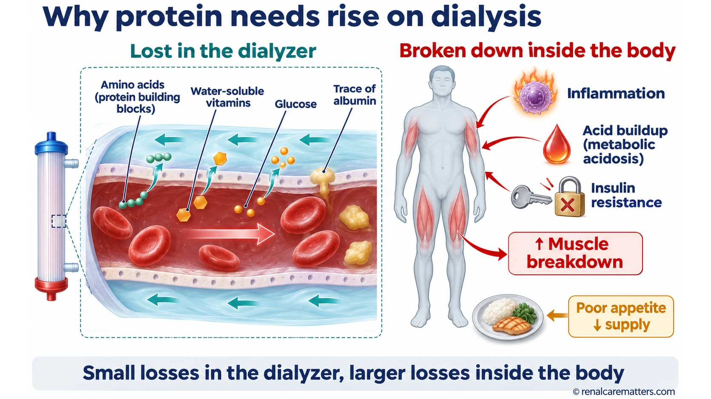
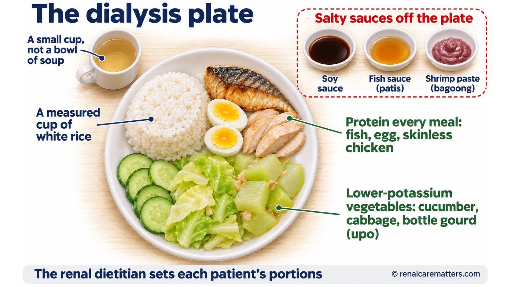
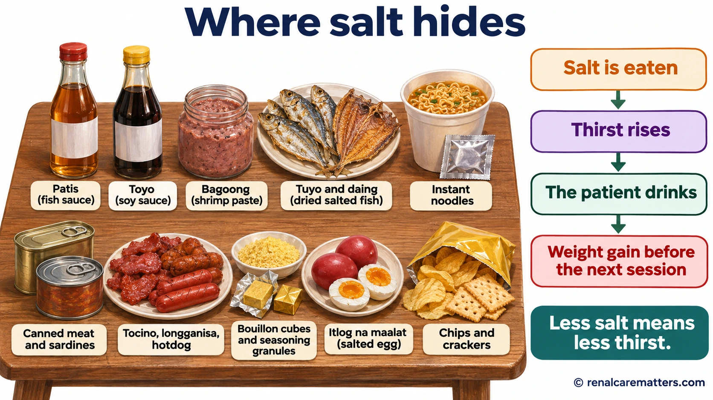
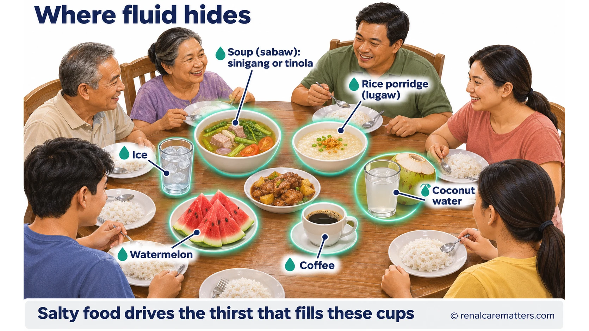
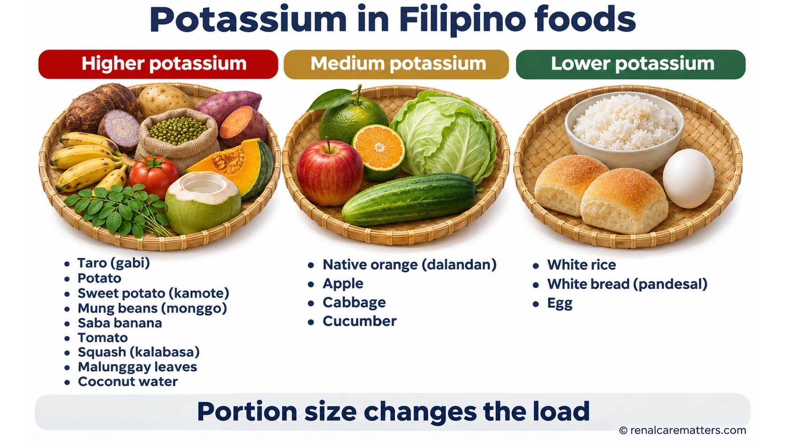
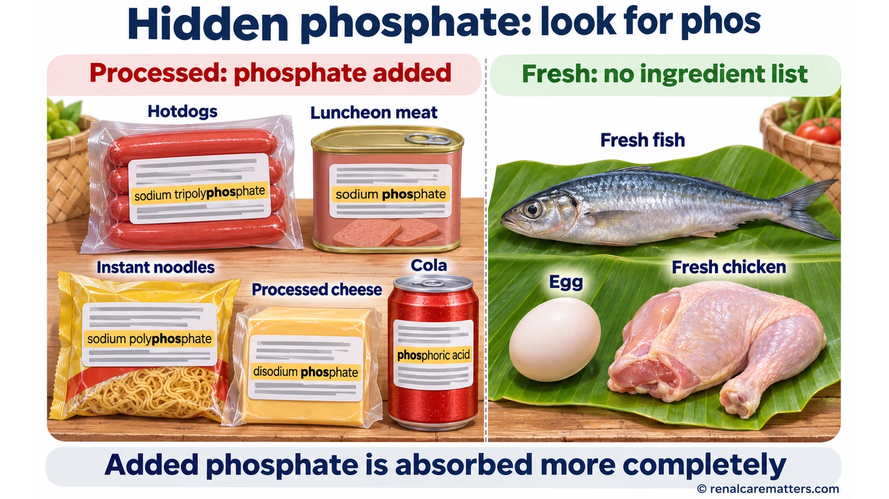
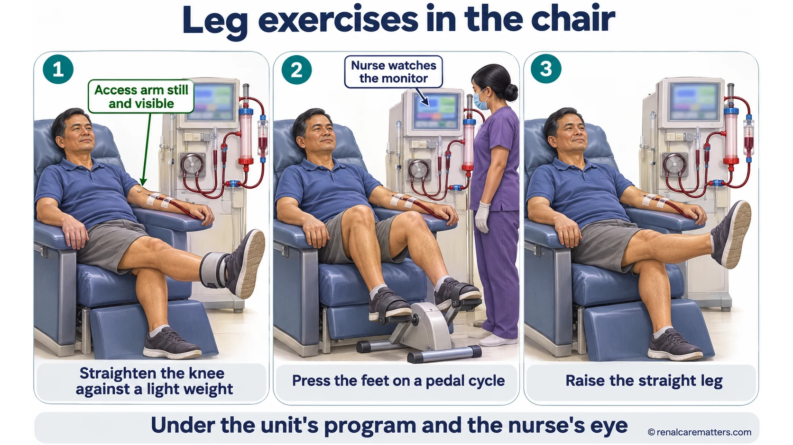

Protein needs on dialysis, signs of wasting, and practical advice on fluid, salt, potassium, and phosphate with Filipino foods.
PublishedNailathalaGipatikPepalwal:ReferencesMga SanggunianMga TinubdanReng Reperensya:18Audience: Physicians who cover hemodialysis shifts · attending nephrologists, medical directors, and head nurses who orient themRead timeOras ng pagbasaOras sa pagbasaOras ning pamamasa:
This module is study material for physicians on duty in hemodialysis units. It explains the reasoning behind common decisions; it is not a protocol. At the chairside, follow your unit’s protocol and ask the attending nephrologist for guidance. Doses and cut-off values are set by your unit. Every case is fictional.
Learning objectives
After this module you should be able to
Explain why protein and energy needs rise on hemodialysis, using amino acid losses into the dialysis fluid, inflammation, acidosis, and muscle breakdown.
Recognize protein-energy wasting by its four categories and screen for it at the chair with the 7-point Subjective Global Assessment, the weight trend, and muscle measures.
Distinguish loss of fat and muscle from loss of fluid when the dry weight falls, and escalate to the attending nephrologist correctly.
Give practical advice on salt, fluid, potassium, and phosphate, built on Filipino food, that agrees with the current guideline and with your unit’s dietitian.
Describe the evidence for eating and oral supplements during dialysis and for intradialytic parenteral nutrition, with the strength of each.
State when to refer a patient to the renal dietitian and when to call the attending nephrologist.
Pre-testBefore you read, answer the 8 self-assessment questions and note your score. After the module, select New set of questions and compare. The difference is what you learned; the questions you still miss are what to reread.
Start here
The big picture, in plain words
In plain wordsPicture a sack of rice with a small tear at the bottom. Each time it is lifted, a few grains fall out. If no one refills it, the sack grows lighter so slowly that no one notices until it sags. A patient on hemodialysis loses a little of what the body has built at every session.
The picture has a limit. A sack only leaks. The body also breaks down its own muscle when it is inflamed, acidic, or resistant to insulin, and uremia dulls appetite. The tear is real but small. The larger problems are a shrunken supply and faster breakdown.
Figure 1 · Key terms for this module
Protein-energy wasting (PEW)Loss of the body’s protein stores and energy reserves in kidney disease.
Subjective Global Assessment (SGA)A bedside score from the history of weight and intake and a look at fat and muscle.
Malnutrition-Inflammation Score (MIS)A 10-part score that adds body mass index and blood tests to the SGA.
Normalized protein catabolic rate (nPCR)Daily protein breakdown per kilogram, estimated from the rise in urea between sessions.
Oral nutritional supplement (ONS)A ready-made drink or powder that adds protein and energy to meals.
Intradialytic parenteral nutrition (IDPN)Nutrients given into the dialysis circuit during the session.
SarcopeniaLoss of muscle mass and strength.
Most patients keep their muscle with enough food, dialysis, and activity. A few slide into wasting quietly, while their weight looks like good news. Your work is to notice the slide, correct the advice that causes it, and bring the renal dietitian and the attending nephrologist in early.
Opening case · fictional
Case: He lost five kilos, and everyone was pleased
Mr. Bienvenido Ocampo, 68, has been on hemodialysis for two years for kidney failure from hypertension. He dialyzes on Tuesdays, Thursdays, and Saturdays. Over four months his post-dialysis weight fell from 64 to 59 kilograms (illustrative). The team lowered his dry weight twice because “he reaches it so easily.”
His wife says he eats “a little rice and soup.” A relative told him that meat is bad for the kidneys, so he avoids it. He has stopped going to church on Sundays because he is tired. His serum albumin has gone from 3.8 to 3.2 g/dL over the same months (illustrative).
Today, a Thursday, he cramps at hour three and his pressure falls. Ms. Arlene Villaruz, the nurse, lays the chair back and stops fluid removal under the unit’s protocol. He recovers within minutes. She then asks you whether the dry weight should be lowered again.
Before reading on, decide:
Is this weight loss fluid, fat, or muscle, and how can you tell at the chair?
What would a two-minute nutrition screen show, and whom do you call?
What is wrong with the advice he received about meat, and what does current guidance say instead?
Keep your answers in mind. The lesson gives you what you need, and the case review near the end shows one sound response.
Lesson · part 1
Why a dialysis patient needs more protein, not less
Muscle protein is broken down and rebuilt every day, and amino acids from food pay for the rebuilding. Kidney failure and dialysis tip that balance toward breakdown.

Figure 2. Each session removes some building blocks of protein along with the waste. Inside the body, inflammation, acid, and insulin resistance speed muscle breakdown, while poor appetite cuts the supply.
The first loss is in the dialyzer. Free amino acids are small, so they cross the membrane with urea. Ikizler and colleagues measured the dialysis fluid in nine patients on three membranes. About 6 to 8 grams of amino acids left per session, depending on the membrane. On the sixth reuse of a high-flux dialyzer, losses rose by about half, and albumin appeared in the fluid.1 The study was small and used dialyzers of the 1990s. Across three sessions, about 7 grams each comes to roughly 3 grams a day: real, but modest. The larger losses happen inside the patient.
Driver
What it does to muscle
What you may notice
Inflammation, from a catheter, infection, or uremia
Speeds protein breakdown, suppresses appetite, lowers albumin production
Fever, a catheter, a raised C-reactive protein, a falling albumin
Metabolic acidosis (Module 2)
Activates the pathways that break down muscle protein
A low pre-dialysis bicarbonate
Insulin resistance
Muscle responds less to the signals that build it
Weakness out of proportion to intake
Poor appetite
Uremia, nausea, altered taste, depression, and post-dialysis fatigue cut intake
Skipped meals, “a little rice and soup”
Inactivity
Muscle that is not used is not rebuilt
Sitting all day between sessions
A standard dialysis text describes the same drivers.2 Their weight differs between patients, so the screen in this module asks about each.
What the guideline says about protein and energy
Before dialysis, some patients are advised to eat less protein. On dialysis the advice changes. The Kidney Disease Outcomes Quality Initiative (KDOQI) 2020 nutrition guideline recommends a dietary protein intake of 1.0 to 1.2 g/kg body weight per day for metabolically stable adults on maintenance hemodialysis (Grade 1C; OPINION for peritoneal dialysis). It also recommends an energy intake of 25 to 35 kcal/kg body weight per day, set by age, sex, activity, and other factors (Grade 1C).3 The Kidney Disease: Improving Global Outcomes (KDIGO) 2022 diabetes guideline gives the same protein range for patients with diabetes on dialysis as an ungraded practice point.4 Module 22 covers the diabetic diet.
The 1 means “we recommend,” and the C means low certainty of evidence. The direction is firm. The prescription for your patient belongs to the dietitian and the nephrologist.
Worked example 1, illustrative arithmetic, not an order. KDOQI 2020 range: 1.0 to 1.2 g/kg/day (Grade 1C).3 Patient weight: 59 kg. 1.0 × 59 = 59 grams of protein per day. 1.2 × 59 = about 71 grams per day. What it tells you: the size of the gap in a patient who eats a little rice and soup. What it does not tell you: which body weight to use (actual, adjusted, or ideal). The guideline leaves that to clinical judgment.
Estimating intake from the urea numbers
Module 7 used the urea values to judge the dose. They also estimate intake. Urea rises between sessions because the body breaks down protein, and in a stable patient breakdown equals intake. The normalized protein catabolic rate (nPCR) turns the rise into grams per kilogram per day.5
Worked example 2, illustrative. Bedside interdialytic-rise equation, as used in the site’s nPCR calculator: nPCR (g/kg/day) = 0.22 + (0.036 × urea nitrogen rise in mg/dL × 24) ÷ interval in hours. Post-dialysis blood urea nitrogen (BUN) on Tuesday: 18 mg/dL. Pre-dialysis BUN on Thursday: 42 mg/dL. Rise: 24 mg/dL. Interval: 44 hours. 0.036 × 24 × 24 = 20.7. Then 20.7 ÷ 44 = 0.47. Then 0.22 + 0.47 = about 0.7 g/kg/day. What it tells you: in a stable patient, intake is probably below the guideline range. What it does not tell you: it is a surrogate. It misleads during infection, with residual urine output, and while the patient’s own muscle is breaking down. Trend it monthly beside the weight and albumin.
RememberBefore dialysis, the advice was often “less protein.” On dialysis it changes to “enough protein.” Check which advice the patient is still following.
Lesson · part 2
Protein-energy wasting: what it is and how common
Picture a house that burns its own walls to keep the lights on. When intake falls short and breakdown runs fast, the body spends muscle and fat the same way. The picture has a limit: the body does not choose this. Inflammation and acidosis drive breakdown even when food is available.
In 2008, an expert panel of the International Society of Renal Nutrition and Metabolism (ISRNM) proposed the term protein-energy wasting (PEW) for loss of body protein and fuel reserves in kidney disease. The panel set criteria in four categories. The diagnosis needs findings in at least three of the four, with at least one finding in each category used.6
Category
Examples of criteria proposed by the ISRNM panel
What it looks like at the chair
Serum chemistry
Low albumin (below 3.8 g/dL by the bromcresol green method), low transthyretin (prealbumin, below 30 mg/dL in dialysis patients), or low cholesterol (below 100 mg/dL)
A monthly albumin that keeps drifting down
Body mass
Body mass index below 23 (the panel noted that a lower cutoff may suit some Asian populations), unintended weight loss of 5% over 3 months or 10% over 6 months, or total body fat below 10%
A post-dialysis weight that falls month after month. Loose clothes
Muscle mass
Loss of muscle mass of 5% over 3 months or 10% over 6 months, a mid-arm muscle circumference more than 10% below the reference median, or low creatinine appearance
Unintended protein intake below 0.8 g/kg per day, or energy intake below 25 kcal/kg per day, for at least 2 months
“A little rice and soup.” A low nPCR
The panel added that markers of inflammation, such as C-reactive protein, are useful clues but do not define wasting. It advised documenting each criterion on at least three occasions, preferably 2 to 4 weeks apart, so one low value does not make the diagnosis.6 The criteria are expert consensus, not a validated diagnostic test.
How common it is
Carrero and colleagues pooled 90 studies of 16,434 patients on maintenance dialysis in 34 countries. Using the SGA or the MIS, the middle half of studies found wasting in 28% to 54% of patients. Region explained part of the variation.7 The studies were observational and used different tools. Still, on a typical shift several of your patients are wasting.
Figure 3 · Signs of wasting at the chair
TemplesHollowing at the sides of the forehead.
Collarbones and shouldersBones that stand out more than they did.
Upper armA thin non-access arm with a loose fold over the triceps.
HandsHollows between the thumb and the index finger.
ClothesA belt on a new hole, a ring that slides.
AppetiteA lunch box that goes home full.
GripA weak handshake, or trouble opening a bottle.
Why albumin alone misleads
Albumin is on every monthly sheet, but it is not a nutrition test. The liver makes less during inflammation, and extra fluid dilutes it. A well-fed patient can have a low albumin during an infection. Low albumin is a surrogate: it tells you something is wrong, not what. Read it beside the temperature, the edema, and the weight trend.
RememberA falling albumin is a question, not an answer. Ask whether the patient is inflamed, overloaded, or underfed, and remember it may be all three.
Lesson · part 3
A two-minute screen at the chair
Think of the screen as three questions and two looks: weight, food, and the gut; then the body and the numbers.
The tools and their evidence
The KDOQI 2020 guideline states that the 7-point Subjective Global Assessment (SGA) is a valid and reliable tool for nutritional status in adults on dialysis (Grade 1B). It suggests that the Malnutrition-Inflammation Score (MIS) may be used in adults on maintenance hemodialysis (Grade 2C).3 The SGA rests on the history of weight and intake, symptoms, function, and a look at fat and muscle.
The MIS adds body mass index, albumin, and total iron-binding capacity to the SGA, for 10 components scored 0 to 3. In 83 hemodialysis outpatients followed for a year, a higher score correlated with more hospital days and was associated with death. Only nine patients died, so the risk estimate was wide.8 The score tracks outcomes. That acting on it changes them is not shown.
Muscle strength adds what the scale misses. Hwang and colleagues pooled 9 prospective cohorts of patients on dialysis. Patients with low handgrip strength had a higher risk of death than those with high strength (risk ratio 1.88, 95% confidence interval 1.51 to 2.33). Each additional kilogram of grip was associated with a 5% lower risk.9 These are associations. Weak grip marks frailty and illness as well as poor nutrition.
The site’s nutrition screening calculator scores the SGA and the MIS. Use the tool your unit has chosen, scored the same way each time.
Figure 4 · The two-minute nutrition screen
Weight trendOpen the record and read the post-dialysis weights for the last three months. Note the percent change.
IntakeAsk what the patient ate yesterday, how many meals, and which protein foods. Ask whether the patient follows any food rule from a relative or an old handout.
Gut and mouthAsk about nausea, vomiting, diarrhea, loose or painful teeth, ill-fitting dentures, and trouble swallowing.
LookCheck the temples, collarbones, upper arm on the non-access side, and hands. Check the ankles and the lower back for edema.
GripIf the unit has a dynamometer, measure grip on the non-access hand.
NumbersRead the latest albumin, potassium, phosphate, bicarbonate, and nPCR together, never one alone.
Score and actScore the SGA or the unit’s tool. Refer a positive screen to the renal dietitian and inform the attending nephrologist.
Your unit’s protocol sets the routine interval and who scores it. Your part is to run the screen when something changes: a falling weight, a full lunch box going home, or a wife who says “he does not eat anymore.”
Stop and callStop and call the attending nephrologist, and refer to the renal dietitian the same week per your unit’s protocol, when you find unplanned weight loss over several months with poor intake or a positive screen; a patient who cannot eat or keep food down because of nausea, vomiting, or mouth or teeth problems; or a falling albumin with fever, new edema, or breathlessness.
RememberAsk what the patient ate yesterday, look at the arms and temples, and read the weight trend. Those three take two minutes and catch most wasting.
Lesson · part 4
Falling weight: flesh or fluid?
Picture a shrinking balloon. It could be leaking air, or the rubber could be thinning. A falling post-dialysis weight is the same puzzle: water, or body.
The picture has a limit, and the limit is the point. The post-dialysis weight is tissue plus fluid. Module 8 set out how the dry weight is chosen. When a patient loses muscle and fat but the target stays the same, the scale hides the loss. The same weight now holds less tissue and more water, which can appear as rising pressure, edema, or breathlessness.
Lowering the target by the tissue lost can be right. The danger is chasing the weight. A patient who eats less also takes in less salt and water, so the target is reached easily. The team reads this as extra fluid and lowers it again. Once the target falls below the new true dry weight, each session pulls fluid the body cannot spare. The patient cramps and drops late in the session, and no one treats the wasting.
The KDIGO Controversies Conference on blood pressure and volume lists reassessment of the target weight among the first measures when sessions are complicated by low pressure. Its statements are conference conclusions, not graded recommendations.10 That a target set for one body becomes wrong when the body changes is established physiology. No trial tells you how often to reassess.
Worked example 3, illustrative. Percent weight change = (old weight − new weight) ÷ old weight × 100 (arithmetic). (64 − 59) ÷ 64 × 100 = 7.8% over 4 months. The ISRNM panel lists unintended weight loss of 5% over 3 months, or 10% over 6 months, among the body-mass criteria for wasting.6 What it tells you: this loss deserves attention. What it does not tell you: whether it is water or tissue. The bedside look and the intake history decide that.
Figure 5 · Falling weight: flesh or fluid
Confirm the trendRead the post-dialysis weights over three months. Calculate the percent change.
Ask about foodWhat did the patient eat yesterday? Any new food rules? Any nausea, mouth, or teeth problems?
Look for tissue lossTemples, collarbones, arms, hands, clothes, grip.
Look for fluidEdema, breathlessness, blood pressure trend, and the weight gain between sessions.
Check the sessionCramps or drops late in the session at the current target suggest the target may now be too low.
ReportTell the attending nephrologist what you found, and refer to the dietitian. The dry weight is reviewed by the nephrologist, not changed by you.
Stop and callStop and call the attending nephrologist before any further change to the target weight when you are asked to lower the dry weight in a patient whose weight has been falling and who may be losing tissue. Manage today’s session by protocol while you call.
RememberA falling dry weight is not always good news. Ask whether the patient lost water, or lost himself.
Lesson · part 5
Salt, fluid, potassium, and phosphate with Filipino food
Picture the dialysis plate: rice, a fresh protein, vegetables, and the sauces on the side. The picture has a limit: portions differ with urine output, laboratory results, and body size, and the dietitian sets them. Your part is to answer everyday questions in a way that agrees with the dietitian and does not push the patient toward wasting.

Figure 6. The dialysis plate: enough protein at every meal, lower-potassium vegetables, and salty sauces kept off the plate. The renal dietitian sets the portions for each patient.
Salt and fluid
Module 2 explained that salt drives thirst. Fluid advice without salt advice fails. The KDOQI 2020 guideline recommends limiting sodium intake to less than 100 mmol per day, which is less than 2.3 grams of sodium, in adults on dialysis (Grade 1C).3 Filipino cooking carries sodium in fish sauce (patis), soy sauce, shrimp paste (bagoong), seasoning cubes, dried and salted fish, and instant noodles.

Figure 7. Salt in the Filipino kitchen. The salt that drives thirst often comes from sauces and seasonings, not the salt shaker.
The fluid allowance belongs to the nephrologist. It depends on urine output and the gains between sessions, not on one number for everyone. Patients often count only drinks, but fluid also hides in soup, porridge, ice, and fruit.

Figure 8. Fluid hides in soup, porridge, ice, fruit, and drinks. Salty food drives the thirst that fills these cups.
Potassium
Module 2 covered why potassium rises. The question here is food. The KDOQI 2020 guideline states that it is reasonable to change dietary potassium to keep serum potassium in the normal range (OPINION). For patients with a high or low potassium, it suggests that intake be based on the patient’s needs and the clinician’s judgment (Grade 2D).3 A KDIGO Controversies Conference described a shift away from blanket restriction toward eating patterns that are associated with better outcomes, such as diets rich in plants. It also noted how few data show that changing the diet brings an abnormal serum potassium back to normal.11
The two sources differ in tone more than substance. Both ask for an individual plan. Units still differ in how strictly they restrict, and the evidence either way is weak.

Figure 9. Potassium content differs by food and by portion. The groupings follow the site’s potassium calculator, which draws on the Philippine Food Composition Tables.
A high pre-dialysis potassium has more causes than the last banana. Before you blame the food, look for these.
Non-food cause
How it raises potassium
What to ask or check
Missed or shortened sessions
Less potassium is removed, and more days of intake build up
Attendance and minutes delivered
Constipation
The colon secretes more potassium when the kidneys cannot. Hard stools slow this route
Bowel habits over the past week
Metabolic acidosis
Potassium shifts out of cells
Pre-dialysis bicarbonate
Medicines
Some blood pressure and heart medicines reduce potassium removal by the gut or the remaining kidney, or slow its entry into cells
The medication list, for the nephrologist to review
Tissue breakdown or a hemolyzed sample
Potassium leaks from damaged cells, in the body or in the tube
Recent injury, bleeding, or a difficult blood draw
The site’s potassium load calculator, drawn from the Philippine Food Composition Tables, shows where large loads hide: coconut water, taro, potato, mung beans, and saba banana.
Phosphate
The KDOQI 2020 guideline recommends changing dietary phosphorus to keep serum phosphate in the normal range (Grade 1B).3 The source of phosphate matters. Phosphate in plant foods is partly bound and poorly absorbed. Phosphate in meat and fish is absorbed better. Phosphate added to processed food as a preservative or flavor is absorbed most completely.3 Module 21 covers phosphate binders and the mineral axis.
Sullivan and colleagues tested this in a cluster randomized trial of 279 hemodialysis patients with high phosphate in 14 facilities. Patients taught to avoid foods with phosphorus additives had a fall in serum phosphorus 0.6 mg/dL larger than those in usual care after 3 months (95% confidence interval 0.1 to 1.0).12 Phosphate is a surrogate, and the trial did not measure fractures, heart disease, or death. It does show that the additive load is real and that teaching changes it.

Figure 10. Phosphate added to processed food is absorbed more completely than the phosphate in fresh food. Teach patients to look for “phos” on the label.
This matters for protein. A patient told to cut phosphate often cuts meat, fish, and eggs. The better trade is to keep the fresh protein and drop the hotdog, the luncheon meat, the instant noodles, and the cola.
Figure 11 · What the physician on duty does about food
Answer plainlyUse the unit’s handouts. Agree with the dietitian.
Protect proteinNever answer a high phosphate or potassium by stopping meat, fish, or eggs.
Look past the plateCheck attendance, bowels, bicarbonate, and medicines before blaming fruit.
ReferMeal planning goes to the dietitian; patterns go to the nephrologist.
RememberSalt drives thirst, processed food drives phosphate, and a high potassium has more causes than the last banana.
Lesson · part 6
Eating and supplements during dialysis
Twelve hours a week in a chair can feed the patient or starve him. The picture has a limit: food in the chair has a cost. Module 13 explained that a meal can lower the pressure during fluid removal, and a drowsy patient can choke.
Meals during dialysis
An ISRNM consensus statement concluded that meals or supplements during hemodialysis may improve nutritional status and should be considered for patients without contraindications. It listed the risks: a fall in pressure after eating, aspiration, gut symptoms, hygiene, and possibly less efficient waste removal, and it called for larger trials.13 This is consensus built on small studies, not a graded recommendation. Follow your unit’s policy on food in the chair.
Oral nutritional supplements
The KDOQI 2020 guideline suggests a trial of oral nutritional supplements for at least three months in adults on dialysis who are at risk of wasting or have it, when counseling alone does not meet their needs (Grade 2D).3 A 2D grade is a suggestion on very low certainty evidence.
A Cochrane review of 22 randomized trials with 1,278 participants found that oral protein-based supplements probably raise serum albumin (mean difference 0.19 g/dL, moderate certainty), more so in hemodialysis and malnourished patients. They may make little or no difference to weight or body mass index.14 A 2023 meta-analysis of 22 trials with 1,185 patients found small rises in albumin (1.26 g/L), body mass index (0.30 kg/m²), and handgrip strength (0.96 kg), with no change in serum potassium or phosphorus.15
The two reviews disagree on body mass index. They included different trials, and all effects are small surrogates. The authors of the 2023 review state that it remains uncertain whether the gains translate into outcomes that matter to patients.15 Supplements raise albumin a little, probably most in those who need it, and do not appear to worsen potassium or phosphate.
Intradialytic parenteral nutrition
Intradialytic parenteral nutrition (IDPN) delivers amino acids, glucose, and fat into the venous line during the session. Cano and colleagues randomized 186 malnourished hemodialysis patients, all given oral supplements, to one year of IDPN or none. IDPN did not improve death at two years, the primary outcome, or admissions, body mass index, or laboratory markers. Both groups improved on supplements.16
The KDOQI 2020 guideline suggests a trial of IDPN for patients with wasting whose needs cannot be met by mouth or tube (Grade 2C).3 The two fit together: IDPN adds nothing for a patient who can take oral supplements. It is a prescription, and the physician on duty never starts it.
No benefit over oral supplements in one large trial16
One randomized trial. Grade 2C in KDOQI for those who cannot eat
Exercise during dialysis
Walk distance, fitness, strength
Improves function measures. No mortality data17,18
Not formally graded. All cycling trials were at high risk of bias
Figure 12 · When to refer to the renal dietitian
Positive screenThe SGA or the unit’s tool flags risk.
Falling weightUnplanned loss over months, or a dry weight lowered more than once.
Poor intakeFewer meals, avoided protein foods, or a low nPCR.
Abnormal chemistryA persistently high potassium or phosphate, or a falling albumin.
Outdated rulesA food rule that does not fit dialysis.
RememberSupplements raise albumin a little, which is a surrogate. Eating in the chair helps many and endangers a few. IDPN is the nephrologist’s decision for the patient who cannot eat.
Lesson · part 7
Keeping muscle: activity and exercise
Muscle is a bank account that pays out only if you keep depositing. Protein is one deposit, and use is the other. The picture has a limit: in kidney failure, inflammation and acidosis are thought to blunt the response of muscle to both, so expectations should be modest.
Physical activity on hemodialysis is low and tends to fall over time.18 Exercise during the session uses supervised time that is otherwise lost.

Figure 13. Simple in-chair leg exercises, done under the unit’s program and the nurse’s eye. The access arm stays still and visible.
What the trials show
Young and colleagues reviewed 13 randomized trials of cycling during dialysis. Pooled data showed no significant change in peak oxygen uptake, a measure of fitness, or in quality of life on the Short Form 36 questionnaire. The distance walked in six minutes improved by about 88 meters. All included trials were judged at high risk of bias.17
A 2026 meta-analysis by Zhao and colleagues pooled 23 trials with 1,114 patients. Combined aerobic and resistance exercise during dialysis improved physical activity and peak oxygen uptake. Resistance exercise improved muscle strength. Moderate intensity improved all three.18 Effects were reported as standardized mean differences, which are hard to translate into bedside units.
The earlier review tested cycling alone and found little change in fitness. The later one included resistance work and found gains. Both report function, which matters to patients, but neither reported an effect on deaths or admissions.
What the physician on duty does
Support the unit’s exercise program, clear patients for it as the protocol directs, and encourage walking on non-dialysis days. Muscle cannot be rebuilt without amino acids, so exercise without enough protein is plausibly less useful. That is physiology, not a trial result. Stop in-chair exercise for a falling pressure (Module 13), chest pain or breathlessness (Module 15), or any problem at the needle sites.
RememberMuscle needs both food and use. Support the unit’s program, stop when the pressure falls, and remember that the benefit shown so far is in function, not survival.
On the floor
Real situations: problems and solutions
These are fictional but typical. For each one, cover the answer, decide what you would do, then compare. Where a step depends on local rules, your unit’s procedure and your supervisor’s direction come first.
The easy dry weight
What you see
A 71-year-old woman has reached her target weight easily for six weeks, and the nurse asks you to lower it again. Her post-dialysis weight has fallen by about 4 kilograms over three months. Her dress hangs loose and her temples look hollow.
What is likely going on
She is probably losing tissue, not water. The scale is falling because muscle and fat are leaving, not because she carries less fluid. A target lowered to chase that loss will soon pull off fluid she cannot spare.
What to do
Do not lower the target yourself. Run the two-minute nutrition screen, look for edema, and tell the attending nephrologist that the weight loss may be flesh. Refer her to the renal dietitian the same week, per unit protocol.
Why it matters
Chasing a falling weight downward treats wasting as success. The dry weight belongs to the nephrologist, who needs your bedside findings to review it.
“My cousin said no more meat”
What you see
A man in his first year of dialysis eats rice, vegetables, and broth. A relative told him that meat ruins the kidneys. His albumin has drifted down over three months.
What is likely going on
He is following advice meant, at best, for some people with kidney disease who are not yet on dialysis. On hemodialysis, current guidance asks for more protein, not less.
What to do
Correct the advice in plain words: on dialysis the body needs enough protein, and fish, egg, and chicken are good choices. Refer him to the dietitian to set the amount and the portions. Tell the attending nephrologist about the falling albumin.
Why it matters
Outdated advice is one of the few causes of wasting you can reverse with a conversation.
The banana that took the blame
What you see
A woman’s pre-dialysis potassium is high for the second month. She says she has stopped all fruit. She has not moved her bowels in four days, and she missed a session last week.
What is likely going on
Constipation and the missed session explain the potassium better than her diet does. The colon removes more potassium when the kidneys cannot, and a missed session adds two to three days of intake.
What to do
Report the value and the likely causes to the attending nephrologist, who decides on any change to the prescription or medicines. Ask the dietitian to review her intake rather than tightening it further on your own.
Why it matters
Cutting every fruit and vegetable removes fiber and makes constipation worse. The patient loses food and keeps the high potassium.
Cola with the noodles
What you see
A tricycle driver brings instant noodles and a cola to every session. His phosphate stays high despite the binders listed in his order.
What is likely going on
Processed foods carry phosphate additives that are absorbed more completely than the phosphate in fresh food. His binders cannot keep up with that load.
What to do
Show him how to look for “phos” on food labels and suggest a fresh protein in place of the noodles. Refer him to the dietitian. Report the pattern to the attending nephrologist, who owns the binder plan.
Why it matters
Additive phosphate is a hidden load. A small change in what he buys can lower his phosphate without taking protein away.
The meal tray and the nodding head
What you see
An 80-year-old man falls asleep with his mouth full of rice in hour two. A few minutes later his pressure falls.
What is likely going on
Eating during dialysis carries risks: a fall in pressure after the meal, and choking or aspiration in a drowsy or frail patient.
What to do
Clear his mouth first and turn his head or body to the side to protect his airway. Manage the drop by protocol (Module 13 covers it). Report the episode to the attending nephrologist and suggest that the team review whether he should eat in the chair, and when.
Why it matters
Food during dialysis helps many patients and endangers a few. The unit’s policy should say who may eat, what, and when.
Field notes
Look at the weight trend, not the weight. Ask the nurse to show you the last three months of post-dialysis weights.
Ask “What did you eat yesterday?” rather than “Are you eating well?” The first question gets an answer you can use.
When the dry weight is reached easily week after week, ask whether the patient is losing tissue before anyone lowers the target.
Read the albumin beside the temperature, the C-reactive protein if available, and the edema. A low albumin is a clue, not a diagnosis.
Keep the unit’s food handouts within reach on your shift. Most diet questions can be answered in two sentences and a referral.
Case review
Back to the case: He lost five kilos, and everyone was pleased
Fluid, fat, or muscle? Mostly tissue. He lost 7.8% of his weight in four months while eating little and avoiding meat. He is tired, his albumin is falling, and he has no edema. Today he cramped and dropped late in the session at a target lowered twice. That pattern fits a target chasing a shrinking body. He reaches it easily because he eats, salts, and drinks less, not because he carries extra water. You confirm it at the chair by looking at his temples, collarbones, and non-access arm, and by checking his ankles and lower back for edema.
The screen and the call. The weight trend shows loss. Yesterday he ate rice and soup twice, with no fish, egg, or meat. His upper denture is loose. His temples are hollow and his arms are thin. Ms. Villaruz scores him at risk on the unit’s SGA form. You do not lower the dry weight. You call the attending nephrologist and report the trend, the screen, the cramps, and the albumin, and say the loss may be flesh. The nephrologist asks for a dry weight review, a dietitian referral this week, a check for infection, a dental review, and this month’s nPCR. You record the call and the plan.
The advice about meat. The relative’s rule may come from advice given before dialysis. On hemodialysis, the KDOQI 2020 guideline recommends 1.0 to 1.2 g/kg of protein per day for stable patients (Grade 1C), roughly 59 to 71 grams a day for him, far more than rice and soup provide. You tell him and his wife that his body now needs protein to rebuild what dialysis and illness take, and that fish, egg, and chicken are good choices. The dietitian sets the portions around his phosphate and potassium, and may suggest a supplement trial.
Skills lab · with your preceptor
Skills checklist: Two-minute nutrition screen at the chair
Perform this screen on a patient in your unit, with consent, or on a colleague playing a patient, while your preceptor observes. Score the patient with the tool your unit uses. Your preceptor rates each step as satisfactory, needs practice, or not observed. Steps marked Critical must all be satisfactory before sign-off. This checklist supports supervised learning; your unit’s own procedure and competency form are the authority. A printable version of every checklist is on the trainer page.
CriticalReviews the post-dialysis weight trend for the last three months and states the percent change.
Asks about appetite, the number of meals, and the protein foods eaten yesterday.
Asks whether the patient follows any food rule from relatives or old handouts.
Asks about nausea, vomiting, diarrhea, teeth, dentures, and swallowing.
Inspects the temples, collarbones, upper arm on the non-access side, and hands for loss of muscle and fat.
CriticalChecks for edema to separate fluid change from tissue change.
Measures handgrip on the non-access hand if the unit has a dynamometer.
Scores the 7-point SGA or the unit’s tool correctly.
Reads the latest albumin, potassium, phosphate, bicarbonate, and nPCR together and explains what each can and cannot show.
CriticalCorrects outdated advice, such as “avoid all meat,” in plain language that agrees with the dietitian.
CriticalDeclines to lower the dry weight on the spot and explains why the nephrologist must review it.
CriticalRefers a positive screen to the renal dietitian and informs the attending nephrologist.
Placement activity. Over two weeks, run the two-minute screen on five patients whose weight has fallen or whose albumin is low. For each, write the percent weight change, the screen result, and whether you judged the change to be fluid or tissue. Review the cases with your preceptor and the unit’s dietitian.
Self-assessment
Check your understanding
Each visit draws 8 questions at random from this module’s 15-question bank. Choose the single best answer for each, then select Check answers; an explanation appears under the best answer. Select New set of questions for a different mix. A good target is 7 of 8 on two different sets. Nothing you select is sent anywhere; scoring happens in your browser.
Ikizler, T. A., Flakoll, P. J., Parker, R. A., & Hakim, R. M. (1994). Amino acid and albumin losses during hemodialysis. Kidney International, 46(3), 830–837. https://doi.org/10.1038/ki.1994.339
Daugirdas, J. T., Blake, P. G., & Ing, T. S. (Eds.). (2015). Handbook of dialysis (5th ed.). Wolters Kluwer.
Ikizler, T. A., Burrowes, J. D., Byham-Gray, L. D., Campbell, K. L., Carrero, J. J., Chan, W., Fouque, D., Friedman, A. N., Ghaddar, S., Goldstein-Fuchs, D. J., Kaysen, G. A., Kopple, J. D., Teta, D., Yee-Moon Wang, A., & Cuppari, L. (2020). KDOQI clinical practice guideline for nutrition in CKD: 2020 update. American Journal of Kidney Diseases, 76(3, Suppl. 1), S1–S107. https://doi.org/10.1053/j.ajkd.2020.05.006
Kidney Disease: Improving Global Outcomes (KDIGO) Diabetes Work Group. (2022). KDIGO 2022 clinical practice guideline for diabetes management in chronic kidney disease. Kidney International, 102(5S), S1–S127. https://doi.org/10.1016/j.kint.2022.06.008
Depner, T. A., & Daugirdas, J. T. (1996). Equations for normalized protein catabolic rate based on two-point modeling of hemodialysis urea kinetics. Journal of the American Society of Nephrology, 7(5), 780–785. https://doi.org/10.1681/ASN.V75780
Fouque, D., Kalantar-Zadeh, K., Kopple, J., Cano, N., Chauveau, P., Cuppari, L., Franch, H., Guarnieri, G., Ikizler, T. A., Kaysen, G., Lindholm, B., Massy, Z., Mitch, W., Pineda, E., Stenvinkel, P., Treviño-Becerra, A., & Wanner, C. (2008). A proposed nomenclature and diagnostic criteria for protein-energy wasting in acute and chronic kidney disease. Kidney International, 73(4), 391–398. https://doi.org/10.1038/sj.ki.5002585
Carrero, J. J., Thomas, F., Nagy, K., Arogundade, F., Avesani, C. M., Chan, M., Chmielewski, M., Cordeiro, A. C., Espinosa-Cuevas, A., Fiaccadori, E., Guebre-Egziabher, F., Hand, R. K., Hung, A. M., Ikizler, T. A., Johansson, L. R., Kalantar-Zadeh, K., Karupaiah, T., Lindholm, B., Marckmann, P., … Kovesdy, C. P. (2018). Global prevalence of protein-energy wasting in kidney disease: A meta-analysis of contemporary observational studies from the International Society of Renal Nutrition and Metabolism. Journal of Renal Nutrition, 28(6), 380–392. https://doi.org/10.1053/j.jrn.2018.08.006
Kalantar-Zadeh, K., Kopple, J. D., Block, G., & Humphreys, M. H. (2001). A malnutrition-inflammation score is correlated with morbidity and mortality in maintenance hemodialysis patients. American Journal of Kidney Diseases, 38(6), 1251–1263. https://doi.org/10.1053/ajkd.2001.29222
Hwang, S. H., Lee, D. H., Min, J., & Jeon, J. Y. (2019). Handgrip strength as a predictor of all-cause mortality in patients with chronic kidney disease undergoing dialysis: A meta-analysis of prospective cohort studies. Journal of Renal Nutrition, 29(6), 471–479. https://doi.org/10.1053/j.jrn.2019.01.002
Flythe, J. E., Chang, T. I., Gallagher, M. P., Lindley, E., Madero, M., Sarafidis, P. A., Unruh, M. L., Wang, A. Y.-M., Weiner, D. E., Cheung, M., Jadoul, M., Winkelmayer, W. C., & Polkinghorne, K. R. (2020). Blood pressure and volume management in dialysis: Conclusions from a Kidney Disease: Improving Global Outcomes (KDIGO) Controversies Conference. Kidney International, 97(5), 861–876. https://doi.org/10.1016/j.kint.2020.01.046
Clase, C. M., Carrero, J. J., Ellison, D. H., Grams, M. E., Hemmelgarn, B. R., Jardine, M. J., Kovesdy, C. P., Kline, G. A., Lindner, G., Obrador, G. T., Palmer, B. F., Cheung, M., Wheeler, D. C., Winkelmayer, W. C., Pecoits-Filho, R., & Conference Participants. (2020). Potassium homeostasis and management of dyskalemia in kidney diseases: Conclusions from a Kidney Disease: Improving Global Outcomes (KDIGO) Controversies Conference. Kidney International, 97(1), 42–61. https://doi.org/10.1016/j.kint.2019.09.018
Sullivan, C., Sayre, S. S., Leon, J. B., Machekano, R., Love, T. E., Porter, D., Marbury, M., & Sehgal, A. R. (2009). Effect of food additives on hyperphosphatemia among patients with end-stage renal disease: A randomized controlled trial. JAMA, 301(6), 629–635. https://doi.org/10.1001/jama.2009.96
Kistler, B. M., Benner, D., Burrowes, J. D., Campbell, K. L., Fouque, D., Garibotto, G., Kopple, J. D., Kovesdy, C. P., Rhee, C. M., Steiber, A., Stenvinkel, P., Ter Wee, P., Teta, D., Wang, A. Y. M., & Kalantar-Zadeh, K. (2018). Eating during hemodialysis treatment: A consensus statement from the International Society of Renal Nutrition and Metabolism. Journal of Renal Nutrition, 28(1), 4–12. https://doi.org/10.1053/j.jrn.2017.10.003
Mah, J. Y., Choy, S. W., Roberts, M. A., Desai, A. M., Corken, M., Gwini, S. M., & McMahon, L. P. (2020). Oral protein-based supplements versus placebo or no treatment for people with chronic kidney disease requiring dialysis. Cochrane Database of Systematic Reviews, 2020(5), Article CD012616. https://doi.org/10.1002/14651858.CD012616.pub2
Liu, P. J., Guo, J., Zhang, Y., Wang, F., & Yu, K. (2023). Effects of oral nutritional supplements on the nutritional status and inflammatory markers in patients on maintenance dialysis: A systematic review and meta-analysis of randomized clinical trials. Clinical Kidney Journal, 16(11), 2271–2288. https://doi.org/10.1093/ckj/sfad130
Cano, N. J., Fouque, D., Roth, H., Aparicio, M., Azar, R., Canaud, B., Chauveau, P., Combe, C., Laville, M., Leverve, X. M., & French Study Group for Nutrition in Dialysis. (2007). Intradialytic parenteral nutrition does not improve survival in malnourished hemodialysis patients: A 2-year multicenter, prospective, randomized study. Journal of the American Society of Nephrology, 18(9), 2583–2591. https://doi.org/10.1681/ASN.2007020184
Young, H. M. L., March, D. S., Graham-Brown, M. P. M., Jones, A. W., Curtis, F., Grantham, C. S., Churchward, D. R., Highton, P., Smith, A. C., Singh, S. J., Bridle, C., & Burton, J. O. (2018). Effects of intradialytic cycling exercise on exercise capacity, quality of life, physical function and cardiovascular measures in adult haemodialysis patients: A systematic review and meta-analysis. Nephrology Dialysis Transplantation, 33(8), 1436–1445. https://doi.org/10.1093/ndt/gfy045
Zhao, S., Zhong, G., Lv, A., Tao, Y., Liu, H., Lv, H., Zhai, Z., Li, Y., Hua, Y., Kang, Y., Zhang, Y., Huang, M., & Ni, C. (2026). Intradialytic exercise interventions to enhance physical activity levels in hemodialysis patients: A systematic review and meta-analysis. American Journal of Nephrology, 57(4), 441–460. https://doi.org/10.1159/000548114
Educational study material for physicians. Does not replace the attending nephrologist’s orders, the unit’s protocols, required certification courses, or supervised practice.